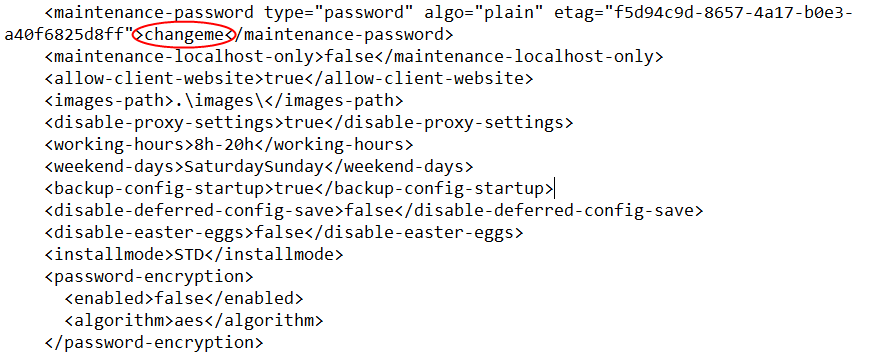
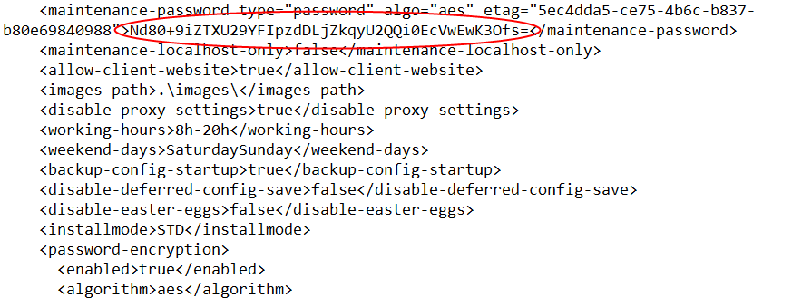
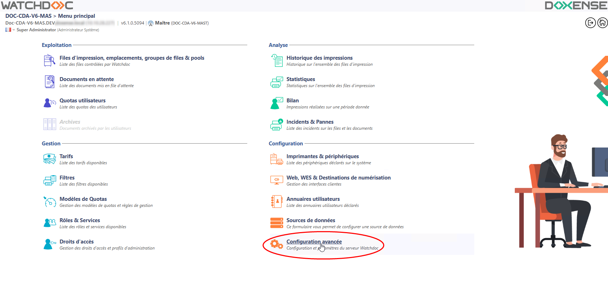
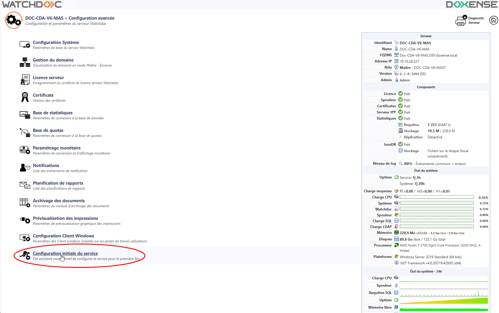
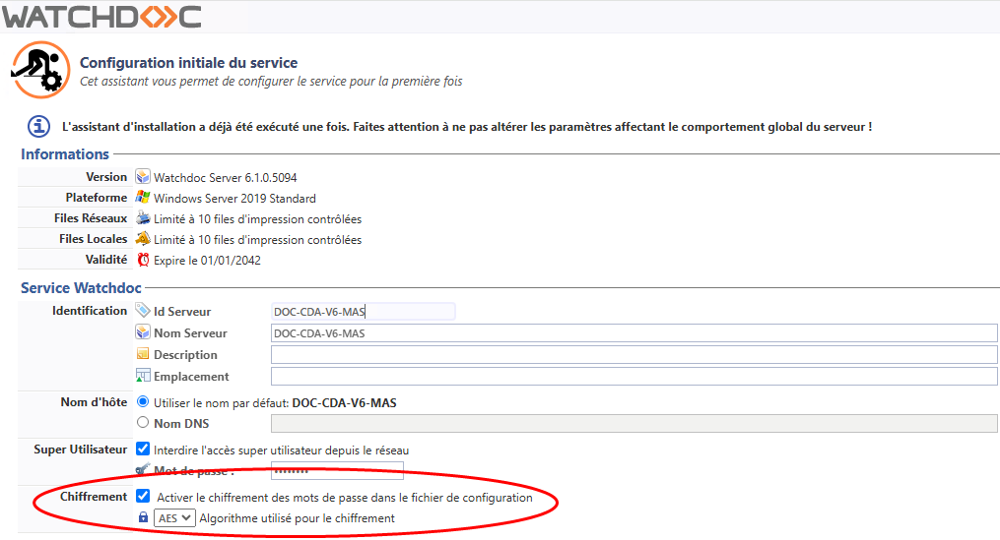

Activer le chiffrement des mots de passe
Principe
Watchdoc contient un certain nombre de mots de passe, enregistrés dans le fichier de configuration générale. Il peut-être utile de chiffrer ces mots de passe afin de sécuriser la solution.
La fonction de Chiffrement (v.5.2 min.), permet de sécuriser l'outil en cryptant les mots de passe qui figurent dans le fichier de configuration de la solution Watchdoc (config.xml). Lorsque cette fonction est activée, les mots de passe n'apparaissent plus en clair dans le fichier de configuration de Watchdoc.
Cette option offre donc une sécurisation de l'outil en rendant illisibles les mots de passe d'administration.
La fonction de chiffrement exploite l'une des trois méthodes suivantes :
-
l'algorithme AES0
 Réseau d'Initiative Publique. Réseau fondé sur des infrastructures privées et publiques. ;
Réseau d'Initiative Publique. Réseau fondé sur des infrastructures privées et publiques. ; -

Fichier de configuration sans chiffrement des mots de passe 
Fichier de configuration avec chiffrement des mots de passe
Procédure
L'option de chiffrement peut avoir été définie lors de l'installation de Watchdoc (cf. Configurer le service Watchdoc)
Pour vérifier ou activer cette fonction après l'installation de Watchdoc :
-
accédez à l'interface d'administration de Watchdoc en tant qu'administrateur ;
-
depuis le Menu principal, section Configuration, cliquez sur Configuration avancée :

-
Dans l'interface Configuration avancée, cliquez sur Configuration initiale du service :

-
Dans l'interface Configuration initiale du service, section Service Watchdoc, cochez la case Activer le chiffrement si vous souhaitez chiffrer les mots de passe du fichier de configuration ;
-
sélectionnez l'algorithme souhaité pour garantir le chiffrement. Le ROT-13 et le Base 64 étant des systèmes de codage simples, nous vous recommandons d'utiliser l'algorithme AES pour une sécurité optimale :

-
cliquez sur le bouton
 pour valider la configuration générale de Watchdoc ;
pour valider la configuration générale de Watchdoc ; -
vérifiez dans le fichier Config.xml que les mots de passe auparavant lisibles ont été chiffrés.